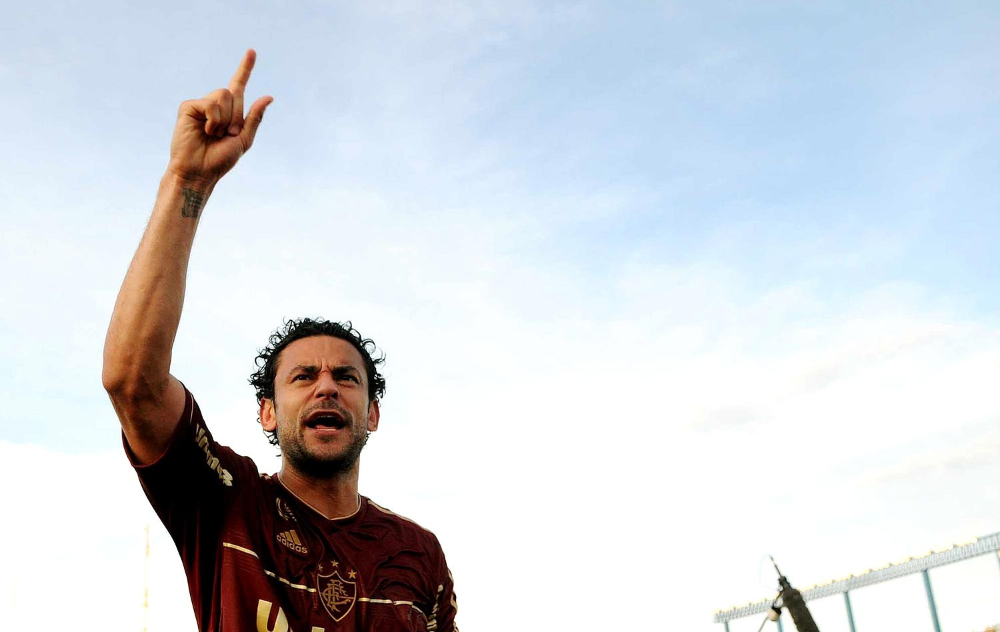
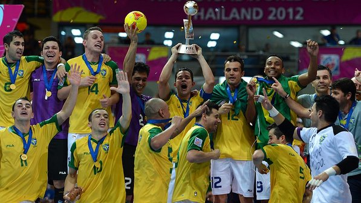

Fred acordou nesta terça-feira com a notícia do retorno à Seleção Brasileira. O jogador foi convocado pelo técnico Mano Menezes para o jogo contra a Argentina, dia 21, em Buenos Aires. Ainda celebrando o título brasileiro conquistado domingo pelo Fluminense e a artilharia da competição com 19 gols a três rodadas do fim, o atacante usou sua conta no Twitter para festejar também o ano irretocável.
- Melhor impossível!! Após uma temporada feliz e vitoriosa como essa, o trabalho ainda é coroado com uma convocação. Só tenho a agradecer a Deus por tudo que está acontecendo na minha vida. Saudações tricolores! - escreveu o jogador.
Além de Fred, outros quatro tricolores foram lembrados pelo técnico da Seleção. Diego Cavalieri e Jean foram as outras novidades, e Thiago Neves e Carlinhos completaram o quinteto do Fluminense para a partida.

A seleção brasileira sofreu muito, precisou ir para a prorrogação, mas venceu a Espanha por 3 a 2, neste domingo, em Bangcoc, e faturou o título do Mundial de Futsal da Tailândia. Depois de empate por 2 a 2 no tempo normal, Neto apareceu a 19 segundos para o fim do tempo extra, marcou seu segundo gol na partida, e se tornou o herói da conquista. Foi o sétimo título mundial da seleção brasileira. Os dois primeiros, em 1982 e 1985, aconteceram quando a competição era organizada pela Federação Internacional de Futebol de Salão (Fifusa), e por isso a Fifa só reconhece os últimos cinco (1989, 1992, 1996, 2008 e agora em 2012).
A conquista deste domingo teve ainda mais significado por acontecer diante do principal rival brasileiro na luta pela hegemonia no futsal. A Espanha havia conquistado dois dos últimos três Mundiais e estava em busca de seu terceiro troféu. No entanto, como há quatro anos, quando venceu nos pênaltis os próprios espanhóis, o Brasil deixa a competição com o troféu.
Para chegar à final, a seleção do técnico Marcos Sorato passou pela primeira fase na primeira colocação do Grupo C, que tinha também Portugal, Japão e Líbia. Nas oitavas de final, 16 a 0 sobre o Panamá, e nas quartas, vitória difícil sobre a Argentina por 3 a 2, na prorrogação, após estar perdendo por 2 a 0. Na semifinal, a vítima foi a Colômbia, que caiu por 3 a 1.